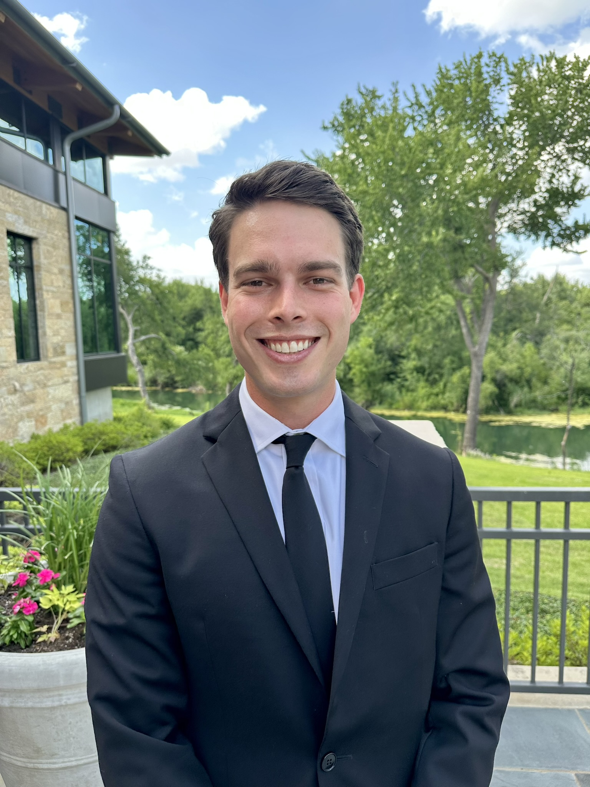
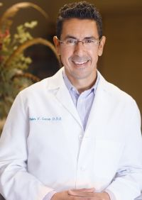

Your care team
The people you'll actually see in the chair.
Two doctors, one standard of care — here's a little about who's looking after your smile.

Treating dentist
Dr. Reed Ragsdale, DDS
Dr. Ragsdale grew up in Southlake and graduated from Carroll High School before earning his bachelor's degree at Baylor University and his Doctor of Dental Surgery at the Texas A&M University College of Dentistry.
His wife, Addison, grew up in Coppell — a Coppell High School graduate and former Coppell Lariette. The two met at Pine Cove and have been married for three years. Around town, you might catch Dr. Ragsdale playing a round at Riverchase Golf Club or out for a run at Andy Brown Park. He and Addison are excited to raise a family in a place that's close to home for both of them.
Dr. Ragsdale is a member of the American Dental Association and Texas Dental Association. He provides the full range of services offered at this practice, and is looking forward to growing his knowledge in the study of TMJ and facial pain.

Founding dentist
Dr. Peter Lecca
Dr. Lecca has been a Coppell resident and has practiced in Coppell since 1994. He is a graduate of Texas A&M University and Baylor College of Dentistry. Dr. Lecca had the privilege of working for the Indian Health Service for four years after graduating from Baylor, stationed in Rapid City, South Dakota — an experience he found rewarding and life changing. He then returned to the Dallas area and opened his practice in Coppell.
Dr. Lecca lives in the city of Coppell and has been a community volunteer with organizations including the Coppell Rotary Club, Coppell YMCA Board, Coppell Chamber of Commerce, and the Coppell Farmers Market.
Professionally, Dr. Lecca is involved in various dental organizations and study clubs, and has taught at Baylor College of Dentistry. Most recently, he has devoted his time to the study of temporomandibular joint dysfunction and other facial pain-related issues, collaborating with other healthcare professionals to provide the best options for his patients. Dr. Lecca is a member of the TDA, ADA, and Southwest Restorative Academy.
Ready to come in?
Whichever doctor you see, you'll get the same unhurried, straightforward care.
Request an appointment